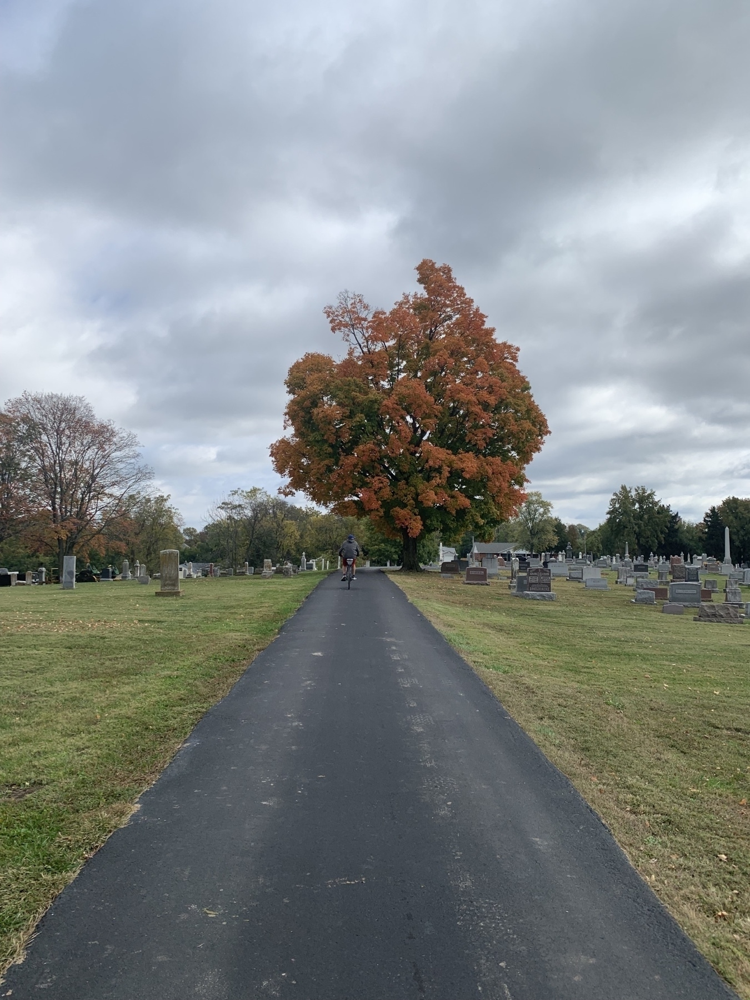
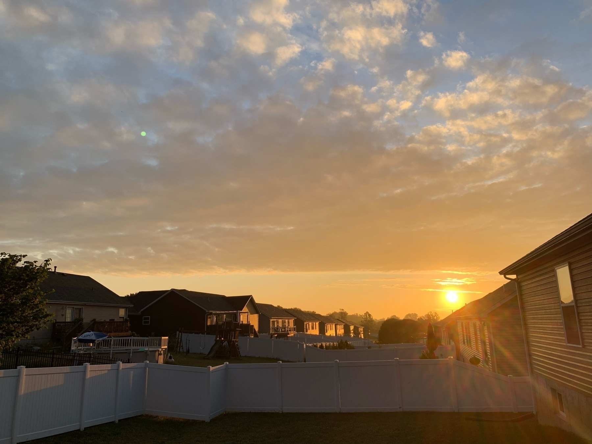
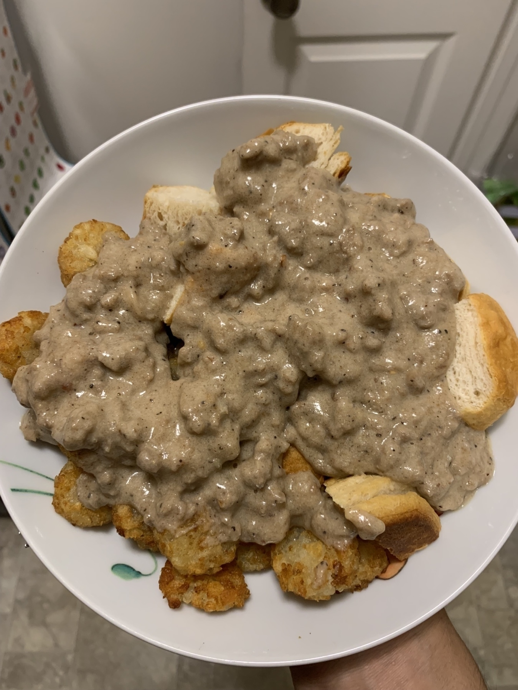
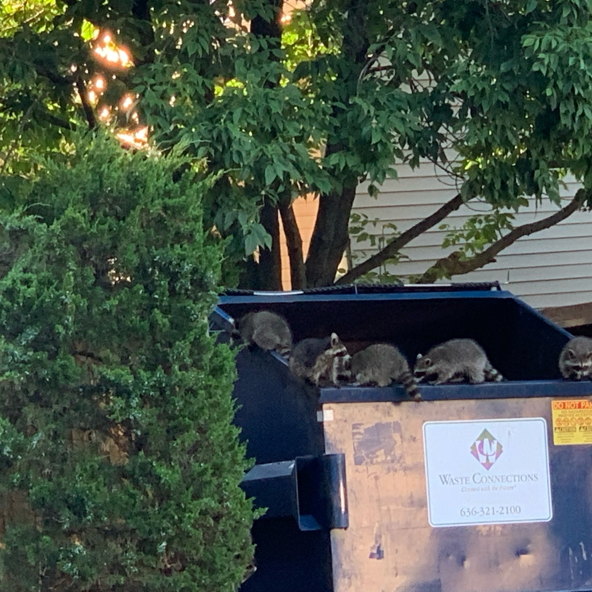
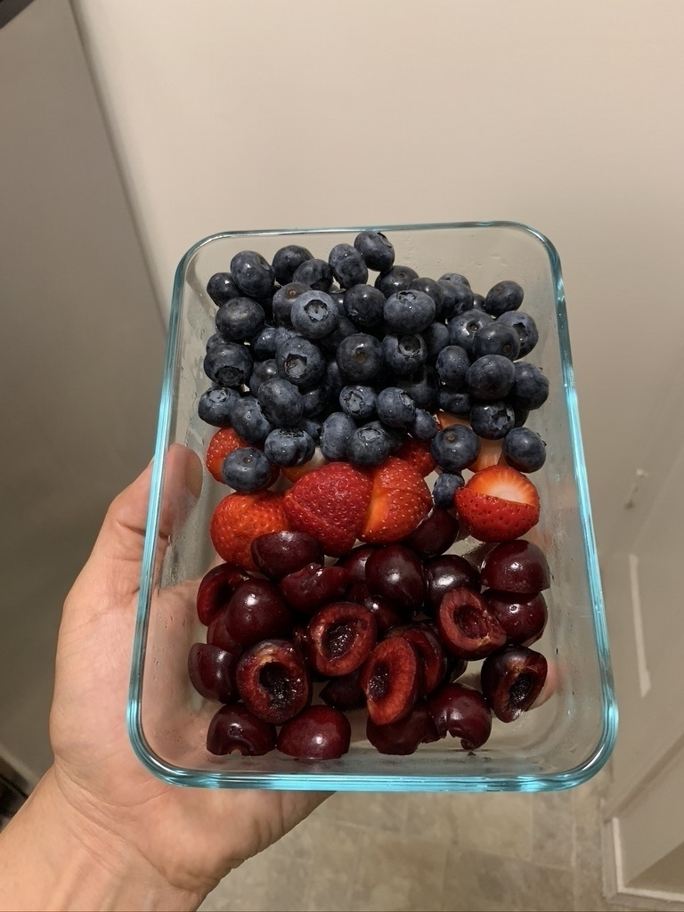

Pie pumpkins
My wife has been making pumpkin pies lately from the little pie pumpkins you get at the grocery store. Normally we’d buy canned, but thought fresh would be better. I’ve heard the large ones have no flavor really, but assumed the little ones would. And they do, but not as much as you’d think.
I was especially curious why the canned pumpkin was so much darker. After doing a little research I learned that much of canned pumpkin is actually another squash called Dickinson pumpkin. It’s huge and kind of pale orange/yellow.
Maybe everyone knows this, but I was a little surprised. I’ll still continue to purchase pie pumpkins, but now I really want to try a Dickinson pumpkin.
My wife made brownies. Last week.
My wife made the most delicious brownies last weekend. It was our first time making brownies from scratch (and especially from scratch vegan). Turns out the recipe is a ton of chocolate and butter. They turned out amazing and only lasted for days.


Went for a bike ride with my father in law this weekend. Saw this pretty tree. I’m so fortunate that I live in a world where I can fit an amazing camera into my pocket comfortably.


Early morning shot from my new house. The sun was so intense. It created such a beautiful glow on everything.


More places you can debug with a REPL
Debugging by starting a REPL at a breakpoint is fun
This was a really interesting read about debugging using REPLs. Two more to add to the list are:
- .NET using visual studio’s immediate mode (I think that’s what it’s called)
- LLDB in Xcode (and probably outside of Xcode too).
I am a huge proponent of using the debugger statement in JavaScript. Debugging allows you to be able to see something at a moment in time and also inspect and execute other things. It’s like freezing time. I am generally not a fan of print statement debugging, but I recognize that sometimes you have to do what you have to do. 🤷🏽♂️
Imposible is now selling tubes of vegan sausage so we made biscuits and gravy. It was amazing! Not pictured is me covering mine with ketchup and hot sauce.

Hans Holbein the Younger
I was on a bit of a Wikipedia spiral (I do this often) and wanted to share something I found. It’s a bit of a windy story, but hopefully you find it interesting and get the bug to read about history.
Yesterday I was reading about a town in England called Blackpool. I thought the name was interesting and was also curious what the ‘pool’ part meant. This led to me reading about bogs. They really are interesting.
I noticed an image of a bog in Ostfriesland. I know that Austria’s name in German is Österreich so I was curious what that word meant.
This led me to an image of a map of northern Germany and all the islands that are just off the coast.
This led me to opening Maps and poking around to see what else was there and I found that there are a ton of islands in that area of the North Sea around the border of Denmark and Germany. Looking at the map I found an island called Helgoland (Helgoland is the German spelling) and decided to look that up.
I read that this island was part of a bight. A word I don’t think I’ve encountered before. Looking up what the German bight was informative and led me to an image of the mouth of the Elbe with an island called Trischen visible. Really beautiful photo shot by Vincent van Zeijst. 
This image led me to the island which led me to the Bay of Meldorf which led me to the Battle of Hemmingstedt (Read about this!!!) which led me to the Kalmar Union which led me to the Hanseatic League which led me to this painting of Georg Giese by Hans Holbein the Younger. I was struck by how realistic this painting was. Reminds me of the Arnolfini Portrait by Jan van Eyck with it’s extreme levels of detail.

Turns out Hans Holbein the Younger painted more than once!
Here’s another one I really liked. This is from 1534!

There isn’t much of a point to this post beyond I am very easily drawn to reading things on Wikipedia and this painter was incredibly talented.
I got the raccoons out. Spent like ten minutes watching two of them try to scale the edges of the dumpster. I’ve heard the groundskeeper normally lets them out, but I don’t mind helping.

Bit late, but I really don’t understand all the hate for the Apple TV 4 remote. The one with the square touch pad. I almost never accidentally click the touch pad or lose it or anything. I’m sure the new remote is better, but I still don’t understand how there is so much hate.
Never smell an infant's hand
I was discussing with my wife whether we should bathe our baby last night.
I did a quick smell test and she smelled fine.
My wife said that her hands are filthy and she’d need a bath.
I said how filthy could they be, she can’t even grab anything.
I was so wrong.
I was so so so so wrong.
But damn is she cute.
Moral of the story, don’t smell an infant’s hands.
They are filthy.
Though they did smell nice after a good scrubbing.

{kind=link}
{kind=link}
{kind=link}
{kind=link}
Turns out cherries are a million times easier to pit when you slice them in half as opposed to trying to shove a metal straw into it and push the pit out.

Jumping from 25000 feet without a parachute.
I’ve watched this video and seen this headline a couple times and while it’s definitely impressive, it’s important to note that he’s skydiving into a gigantic net.
Super interesting look into how and why cultures perceive emoji (and other things) differently. The idea that someone can see the same thing has me and come away with a distinctly different feeling and emotion is fascinating.
My first child was born today. I cannot overstate my excitement. Baby is doing well and so is mama. What a day.
Amazing! dronedj.com
Went hunting for mushrooms today. We found four big morels. My wife fried them and they were delicious. I hope I can find some more.
Thinking back to a beautiful Ohio day
I really enjoyed how this photo came out. My wife and I were lucky enough to stay at a house on Lake Erie last summer. Hopefully we’ll be lucky enough to stay there again one day.

Taken with my iPhone XS Max on 2020-06-08 at 21:02:40
Every Programmer Is Not A Terminal User
I’m always surprised that every programmer isn’t a skilled terminal user. Perhaps it’s because I got into programming after finally being able to purchase a MacBook, but having no idea what to do with it, I searched for “terminal hacks” online and the rest is history.
I very much prefer to use the terminal for lots of tool things like git and basic Unix stuff. I do use a text editor though. Occasionally I’ll use vim but I’m not a magician.
I’ve seen many of my coworkers reach for a graphical git client and for some reason this surprises me over and over. I’m not shaming anyone. Just observing.
I wonder if they are surprised when they see me typing away on that black screen, chaining stuff together?
Working with my brother on his website
I’ve been working with my brother on his photography website for a few years and it’s changed a lot over time.
My first iteration was to take all the photos he sent me and make a basic website that displays them, using static html and css.
The next thing I tried was to store them in Firebase and then sort of dynamically pull in the images and import them into the same structure.
Then I learned about react.js and decided that I could try that out and build up his site. That was a pretty interesting experience and I learned a lot.
Unfortunately all of that took a lot of time and required me to basically build a CMS on my own. While I could probably do that, I realized over time that I didn’t want to and furthermore couldn’t devote the time to give him what he wanted. So I made the tough, 😂, decision to make him a SquareSpace website.
I’ve been listening to ads for them in podcasts for years and finally decided it was worth it. Why should I keep him from updating his stuff because I wasn’t feeling the dev process. For the last 4 weekends, I’ve helped him work on the site and I have to say that it’s a great experience.
It’s still the early stages, but I’m glad I had this journey. I learned a lot of web stuff that has made me a better developer and I’ve also learned when to be pragmatic. I’m glad I can help him get his stuff out there and I can still provide technical assistance.
Introduction
Hi, I’m Nick.
I’m a software engineer living in Saint Louis, Missouri. I’ve been working in the web space, writing .NET and JavaScript apps for about five years. I’m very interested in iOS and macOS development so that’s what I’ll be talking about and posting here.
I started a blog at nickkaczmarek.com, but I’ll be slowly moving over here. I only have two or three posts there so that shouldn’t be tough.
I hope you all enjoy!